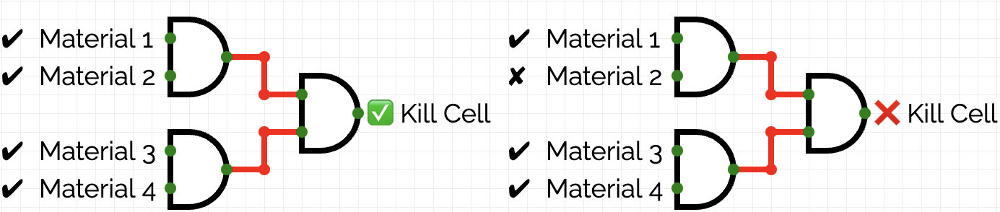

What is PKD?
Polycystic Kidney Disease (PKD), is an inherited disease where clusters of cysts, which are fluid sacs, grow in the kidneys. Too many cysts or large cysts can damage the kidney and lead to kidney failure (Mayo Clinic, n.d.).

(National Institute of Diabetes and Digestive and Kidney Diseases, n.d.)
Why does this matter?

PKD is one of the most common genetic disorders as it affects about 500,000 people in the United States. The autosomal dominant type affects 1 in every 400 to 1000 while the autosomal recessive type affects 1 in 20,000 (National Institute of Diabetes and Digestive and Kidney Diseases, n.d.). Furthermore, PKD currently has no cure and is only monitored by doctors. As a result, finding a cure is necessary to address this life-threatening disease.
(Centers for Disease Control and Prevention, n.d.)
What is CRISPR Gene Editing?
CRISPR-Cas9 is a bioengineering tool that allows scientists to edit the genome, or the complete DNA, of a living organism. As a result, mutated or defective genes can be fixed using CRISPR gene editing, which is called gene therapy. Thus, CRISPR-Cas9 can be used to destroy parts of the DNA that create the cysts in kidneys in individuals who have PKD, preventing the disease from getting worse (Qi, 2024).

(MIT, n.d.)
How does this work?
(1) Identify
First, using logic gates, which is a system that produces an output with one or all inputs, we are able to locate the cells that form the cysts using AND gates, which requires both inputs to produce an output. If all the materials (input) that makeup these cyst-producing are present within a cell, that cell can be marked as a target (output).
Cancer Cell
Normal Cell
Source: http://circuitverse.org/
If all materials are active, the cell will be targeted for gene editing.
If all materials are inactive, the cell will not be targeted for gene editing.
(2) Gene Edtiing
After the cells that make the cysts have been identified, CRISPR-Cas9 can be used to edit the DNA of the cells so that they stop creating the cyst structures by removing the mutation.

(Meeske et al., 2019)